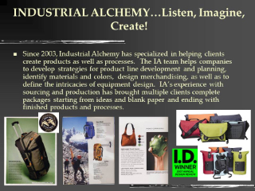
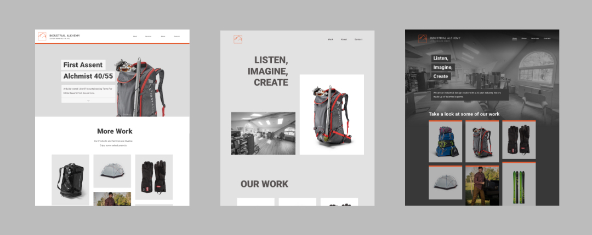

/ Project
Industrial Alchemy
A small outdoor gear design studio had neglected their digital presence and needed a new website to start a new chapter.
Industrial Alchemy works primarily in the outdoor industry as a design studio with expertise in full scale production systems. Clients range from large scale industry leaders to small specialty brands. Industrial Alchemy prides themselves on flexibility and successful experience.
The goal with a new website was to improve the existing client acquisition methods as well as open up the opportunity for new channels for growth.
Website mockup from design process
Overview
Scope
Design
Development
Implementation
Copy and Content Editor
Timeline
Spring - Fall 2019
Due to scheduling, publishing the website was delayed. Most of the work was done in 4 weeks during the summer months.
Context
During my time working on Industrial Alchemy’s I was also working for them as an Industrial Designer. These responsibilities separate from the website included a range from patterning to CAD modeling and prototyping.
Development
Groundwork
Site Audit

Existing homepage was a poor introduction to the company. The sites neglect made this page so outdated that it undermined the authority of the brand. A design focused company needs demonstrate their values to potential clients.
Navigating through the site I realized that each page was an image. The text was not selectable or editable. This highlighted the need for improved SEO for the site as well as a refinement of the information presented. The awards and expertise that the company prides itself on were hindered by presentation and poor design.
Collaboration
Working with the client to create a product that they feel represents and excites them starts with involving their input at a foundational level. Initial meetings with the Industrial Alchemy leadership involved outlining some basic brand attributes as well as goals for the new site. It was apparent from this stage that the leadership team had strong impulses that required careful guidance.
Who/what is Industrial Alchemy
Experienced team of designers
Highly flexible range of services to meet diverse client needs
A trustworthy company demonstrated by well performing history
Client goals for the Website:
Aquire new clients
“Elegant/Sophisticated” digital presence
A way to display projects for reference
Goals
1. Brand
Create a quality brand introduction and expression of values for potential clients.
2. Co-Design
Transform disjointed client desires into cohesive user experience.
3. Growth
Foster new more passive growth channels for the business.
Ideation
Site Map
Audit to Site Map
I took an overview of the original site and retyped out all the useful text. I expected the text would be refined later but it was a place to start from content wise. From the audit of the existing site, the goals, and other assets, I created a site map. The focus was on encouraging users to contact Industrial Alchemy and intuitive pathways for learning more about the company.
Content Development
A linked document (based on the site map) was the basis for Industrial Alchemy to develop their content for each page in an organized way. Industrial Alchemy lacked many systems of organization so creating actionable and measurable lists and benchmarks was key to the process.
Design Directions
Initial Design Directions
Initial designs were created based on general expressions of preferences during initial meetings. The goal was to further probe the preferences that the client was unable to articulate in meetings. These prototypes in addition to examining competitors websites was a crucial step in both research and design direction.
Iteration
Refinement
Story Focus
In order to convey the complex history and capabilities of the company I pushed towards a more narrative introduction that shows the office space and most prominent are the values. Under that there is a brief bit of text about who Industrial Alchemy is and what they can do.
Action Focus
In order to capitalize on this new potential channel of client acquisition I wanted to encourage action in the user so that ultimately they would look to reach out and inquire. This design direction also highlights the products with 100% width images and linked product pages.
Live-Prototype
Git Hub
Using a Git-Hub repository I was able to create a live prototype to put the final touches on the site design and code while the content (copy, images, awards) were worked on by the Industrial Alchemy team.
Copy + content
Editing
The final stretch was defined by copy editing and content development. This included organizing image, and info databases as well as reviewing copy and aligning it with the goals of each section.
Final Deliverables
Features
Product Focus
The products on the home page are allowed to shine with large 100% width images just below the fold. The user is then prompted to see more projects. The products page has 12 projects to view.
Expression
Images and in-depth paragraphs serve as the basis for expressing to the user who Industrial Alchemy is. There is a depth to the information on the website.
Navigation
inline Navigation
The highlight of the narrative experience on the site is inline site navigation. User has control over where they go but general flow promotes clarity and engagement.
Menu
In supporting the clients voice the menu was reduced to a hamburger button. This has obvious usability issues but it is a key part of the navigation system and stems from client demands.
Reflection
Challenges
Copy
Industrial Alchemy leadership had strong preferences for text heavy pages. This lead to an ever expanding opening paragraph and delays on finalization site wide. To facilitate this process I worked to copy: slimming down many paragraphs and working towards honing the paragraphs to better reflect the image of the company.
Image Assets
For an image focused website careful selection of images is crucial. In order to create cohesive product pages and balanced pages I combed archives and folders. The final product has high-quality imagery that reflects the quality of the products that Industrial Alchemy produces.